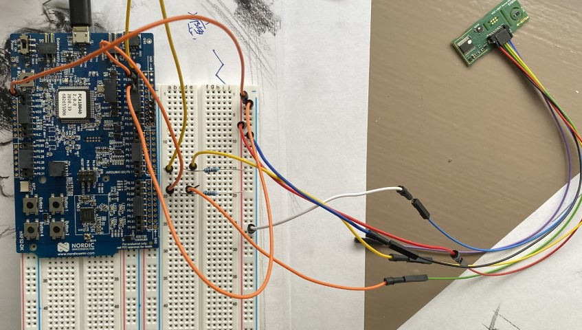
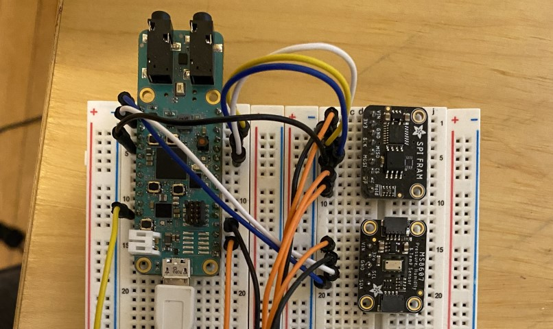
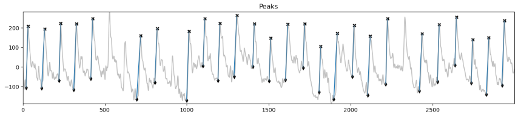
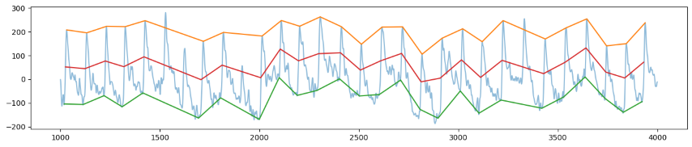
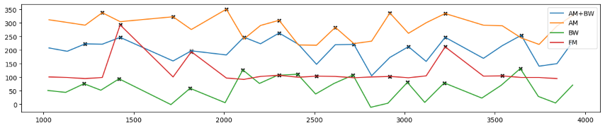

Art Gallery
Full gallery and project information
FaceBit: Smart Face Mask
Paper published in the Proceedings of the ACM on Interactive, Mobile, Wearable and Ubiquitous Technologies, Dec 2021

Development board setup for air quality sensor testing
Protean: Energy Harvesting Sensor Platform
Paper published in the Proceedings of the 20th ACM Conference on Embedded Networked Sensor Systems

Breadboard setup to debug FRAM drivers for device
Pulse Plethysmography Processing
Signal processing details and project information



Using tweaked IMS algorithm to extract respiratory signal from PPG
Javascript Ray Tracing
Ray tracer project information and interactive ray tracer
 Ray traced image generated from scene 3
Ray traced image generated from scene 3
Data Visualization: Palette Generator
Data visualization project information and interactive palette generator
 Palette generated from artworks of Yoshida Hiroshi
Palette generated from artworks of Yoshida Hiroshi